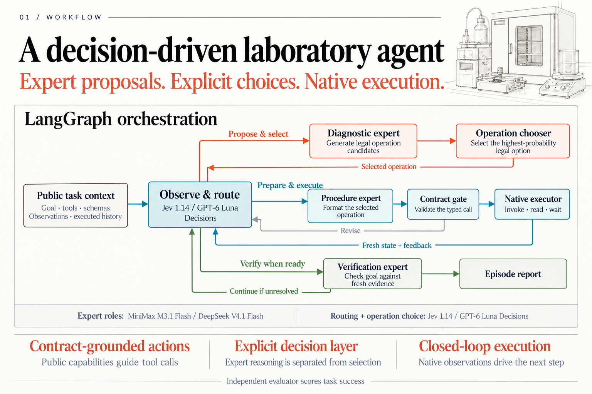
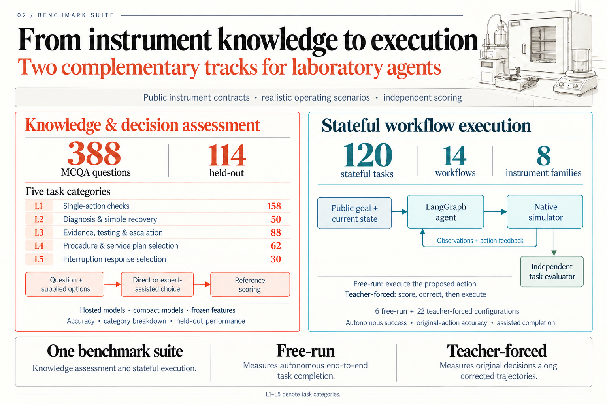
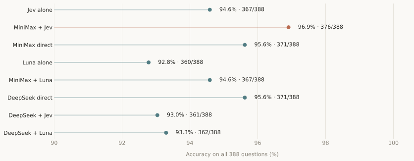
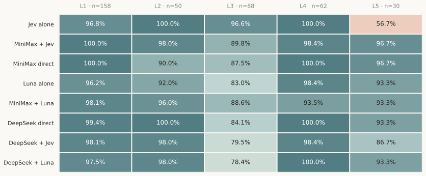
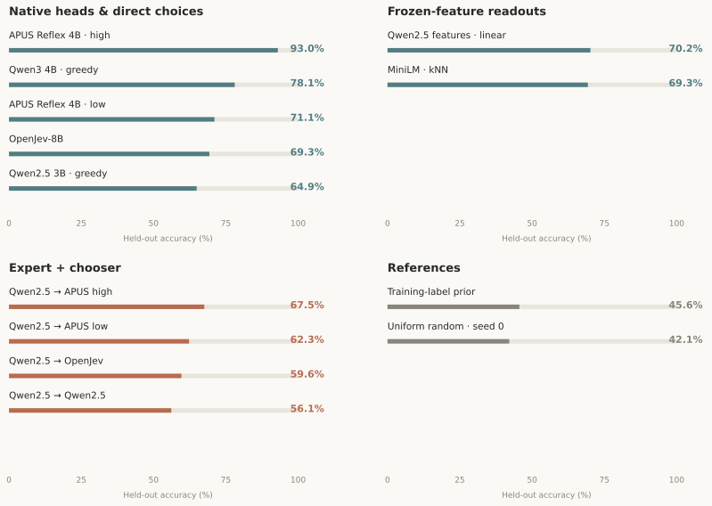
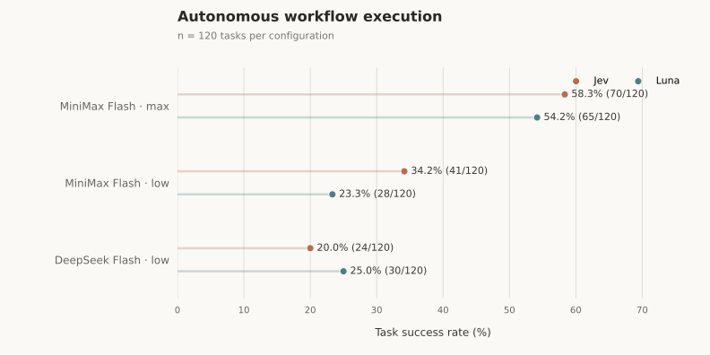
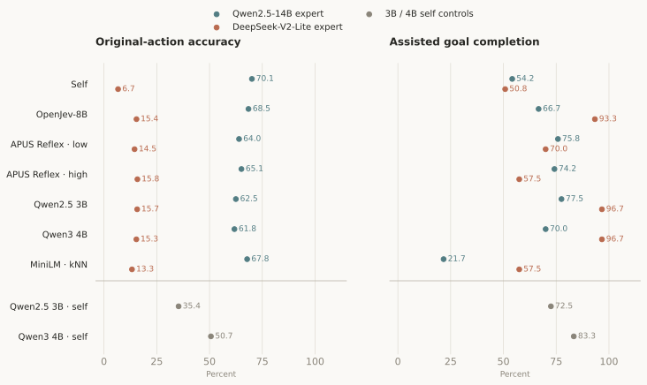

Knowledge and execution · MCQA and autonomous workflows
Knowledge: MiniMax + Jev reaches 96.9% across 388 questions.
Execution: MiniMax max + Jev completes 58.3% of tasks; MiniMax max + Luna reaches 54.2%.
Eight hosted-model configurations answer the same 388 questions. Accuracy measures selection of the accepted answer from the supplied options.
Best overall: MiniMax + Jev, 376/388 correct (96.9%).

| Method | Correct / 388 | Accuracy |
|---|---|---|
| Jev alone | 367/388 | 94.6% |
| MiniMax + Jev | 376/388 | 96.9% |
| MiniMax direct | 371/388 | 95.6% |
| Luna alone | 360/388 | 92.8% |
| MiniMax + Luna | 367/388 | 94.6% |
| DeepSeek direct | 371/388 | 95.6% |
| DeepSeek + Jev | 361/388 | 93.0% |
| DeepSeek + Luna | 362/388 | 93.3% |
Five categories describe the type of decision being tested.
| Category | Decision being tested | Questions |
|---|---|---|
| L1 | Single-action checks | 158 |
| L2 | Direct diagnosis and simple recovery | 50 |
| L3 | Evidence assessment, testing and escalation | 88 |
| L4 | Procedure and service plan selection | 62 |
| L5 | Interruption response plan selection | 30 |

Jev excels at evidence assessment, but struggles with interruption response. Jev alone leads L3 at 85/88 (96.6%), while answering only 17/30 L5 questions correctly (56.7%).
MiniMax advice shifts the balance. MiniMax + Jev raises L5 to 29/30 (96.7%), while L3 falls to 79/88 (89.8%). The stronger overall score reflects different gains and losses across categories.
Basic checks and supplied procedures are near ceiling. L1 scores range from 96.2–100% and L4 from 93.5–100%. L1 contributes 158/388 questions (40.7%) to the overall score. L4 and L5 assess selection of supplied plans.
The knowledge evaluation adds 32 local configurations and references, spanning native decision heads, generative choices, frozen-feature readouts and expert–chooser combinations. These methods are compared on 114 held-out questions; training and validation examples are excluded from this score.

APUS Reflex high leads the compact models. It answers 106/114 held-out questions correctly (93.0%). APUS low scores 71.1%, while greedy Qwen3 4B scores 78.1% and Qwen2.5 3B scores 64.9%.
Adding an expert does not automatically improve selection. Qwen2.5 advice followed by APUS high achieves 67.5%, versus 93.0% for the native APUS high head. Frozen-feature methods span 69.3–70.2%; their readouts use the MCQA training split.
The chart shows native heads, HF greedy choices, two feature methods, all four expert–chooser combinations and two references. Every displayed method uses 114 held-out questions; the separate T1 rule reference covers 64. OpenJev-8B is a separate checkpoint from hosted Jev 1.14.
| Configuration | Correct / held-out | Accuracy | Valid answers |
|---|---|---|---|
| agentic-qwen25-to-apus-high-seed0 | 77/114 | 67.5% | 93.9% |
| agentic-qwen25-to-apus-low-seed0 | 71/114 | 62.3% | 93.9% |
| agentic-qwen25-to-openjev-seed0 | 68/114 | 59.6% | 88.6% |
| agentic-qwen25-to-qwen-seed0 | 64/114 | 56.1% | 93.9% |
| apus4b-native-high-seed0 | 106/114 | 93.0% | 100.0% |
| apus4b-native-low-seed0 | 81/114 | 71.1% | 100.0% |
| openjev8b-native-seed0 | 79/114 | 69.3% | 94.7% |
| qwen25-3b-hf-choice-seed0 | 74/114 | 64.9% | 100.0% |
| qwen25-3b-hf-logprobs-seed0 | 74/114 | 64.9% | 100.0% |
| qwen25-3b-hf-sampling-seed0 | 74/114 | 64.9% | 100.0% |
| qwen25-3b-hf-sampling-seed1 | 74/114 | 64.9% | 100.0% |
| qwen25-3b-hf-sampling-seed2 | 74/114 | 64.9% | 100.0% |
| qwen25-3b-hf-verbalized-cited-seed0 | 63/114 | 55.3% | 91.2% |
| qwen25-3b-hf-verbalized-seed0 | 70/114 | 61.4% | 100.0% |
| qwen25-3b-ollama-choice-seed0 | 74/114 | 64.9% | 100.0% |
| qwen25-3b-ollama-sampling-seed0 | 74/114 | 64.9% | 100.0% |
| qwen25-3b-ollama-sampling-seed1 | 72/114 | 63.2% | 100.0% |
| qwen25-3b-ollama-sampling-seed2 | 74/114 | 64.9% | 100.0% |
| qwen25-3b-ollama-verbalized-cited-seed0 | 64/114 | 56.1% | 91.2% |
| qwen25-3b-ollama-verbalized-seed0 | 70/114 | 61.4% | 100.0% |
| reference-t1-rules | 64/64 | 100.0% | 100.0% |
| reference-uniform-seed0 | 48/114 | 42.1% | 100.0% |
| minilm-knn-seed0 | 79/114 | 69.3% | 100.0% |
| qwen25-hidden-linear-seed0 | 80/114 | 70.2% | 100.0% |
| qwen3-4b-hf-choice-seed0 | 89/114 | 78.1% | 100.0% |
| qwen3-4b-hf-logprobs-seed0 | 89/114 | 78.1% | 100.0% |
| qwen3-4b-hf-sampling-seed0 | 89/114 | 78.1% | 100.0% |
| qwen3-4b-hf-sampling-seed1 | 89/114 | 78.1% | 100.0% |
| qwen3-4b-hf-sampling-seed2 | 90/114 | 78.9% | 100.0% |
| qwen3-4b-hf-verbalized-cited-seed0 | 84/114 | 73.7% | 93.9% |
| qwen3-4b-hf-verbalized-seed0 | 88/114 | 77.2% | 100.0% |
| reference-majority-seed0 | 52/114 | 45.6% | 100.0% |
The T1 rule reference covers 64 held-out questions; all other configurations cover 114. Sampling seeds are separate configurations.
Local checkpoints. Qwen2.5-3B-Instruct; Qwen3-4B-Instruct-2507; OpenJev-8B; APUS Reflex 4B-5949 (low/high); all-MiniLM-L6-v2.
120 tasks across 14 workflows and 8 instrument families. Six expert–decision model combinations execute tasks through the LangGraph workflow.

MiniMax with stronger reasoning leads this evaluation. Jev performs better with MiniMax low; Luna performs better with DeepSeek low. The decision-model advantage depends on the expert configuration.
| Expert / reasoning | Decision model | Success | Rate | Outcome mix | Native unsuccessful | Early exit |
|---|---|---|---|---|---|---|
| MiniMax · max | Jev | 70/120 | 58.3% | 19 | 31 | |
| MiniMax · max | Luna | 65/120 | 54.2% | 14 | 41 | |
| MiniMax · low | Jev | 41/120 | 34.2% | 8 | 71 | |
| MiniMax · low | Luna | 28/120 | 23.3% | 7 | 85 | |
| DeepSeek · low | Jev | 24/120 | 20.0% | 2 | 94 | |
| DeepSeek · low | Luna | 30/120 | 25.0% | 6 | 84 |
Green: success · Amber: native unsuccessful · Rose: early exit.
With Luna, MiniMax rises from 28 to 65 successes: +37 tasks, or +30.8 percentage points. With Jev, max achieves 70 versus 41 at low.
At MiniMax low, Jev leads Luna by 13 tasks (+10.8 pp). At DeepSeek low, Luna leads Jev by 6 tasks (+5.0 pp).
Many unsuccessful runs end before normal evaluator completion. The table below separates observable output/call errors from external failures and unresolved causes.
| Instrument | MiniMax · max Jev | MiniMax · max Luna | MiniMax · low Jev | MiniMax · low Luna | DeepSeek · low Jev | DeepSeek · low Luna |
|---|---|---|---|---|---|---|
| binder_fd056 | 9/18 · 50% | 10/18 · 56% | 6/18 · 33% | 4/18 · 22% | 7/18 · 39% | 7/18 · 39% |
| eppendorf_cellxpertc170i | 1/6 · 17% | 0/6 · 0% | 0/6 · 0% | 0/6 · 0% | 0/6 · 0% | 0/6 · 0% |
| esco_efa5uduvw | 11/18 · 61% | 12/18 · 67% | 10/18 · 56% | 7/18 · 39% | 2/18 · 11% | 1/18 · 6% |
| ika_plate_rctdigital | 16/18 · 89% | 15/18 · 83% | 8/18 · 44% | 7/18 · 39% | 4/18 · 22% | 6/18 · 33% |
| nabertherm_l9 | 15/18 · 83% | 11/18 · 61% | 8/18 · 44% | 6/18 · 33% | 7/18 · 39% | 11/18 · 61% |
| newera_ne1000 | 16/24 · 67% | 13/24 · 54% | 6/24 · 25% | 3/24 · 12% | 3/24 · 12% | 4/24 · 17% |
| peak_precisionhydrogen | 0/6 · 0% | 0/6 · 0% | 0/6 · 0% | 0/6 · 0% | 0/6 · 0% | 0/6 · 0% |
| vaisala_dmt152 | 2/12 · 17% | 4/12 · 33% | 3/12 · 25% | 1/12 · 8% | 1/12 · 8% | 1/12 · 8% |
| Workflow | MiniMax · max Jev | MiniMax · max Luna | MiniMax · low Jev | MiniMax · low Luna | DeepSeek · low Jev | DeepSeek · low Luna |
|---|---|---|---|---|---|---|
| dewpoint_offline_calibration | 2/6 · 33% | 4/6 · 67% | 3/6 · 50% | 1/6 · 17% | 1/6 · 17% | 1/6 · 17% |
| dewpoint_startup_measurement_diagnosis | 0/6 · 0% | 0/6 · 0% | 0/6 · 0% | 0/6 · 0% | 0/6 · 0% | 0/6 · 0% |
| furnace_door_pause_recovery | 5/6 · 83% | 3/6 · 50% | 2/6 · 33% | 1/6 · 17% | 4/6 · 67% | 5/6 · 83% |
| furnace_program | 10/12 · 83% | 8/12 · 67% | 6/12 · 50% | 5/12 · 42% | 3/12 · 25% | 6/12 · 50% |
| hood_illumination | 10/12 · 83% | 8/12 · 67% | 7/12 · 58% | 7/12 · 58% | 1/12 · 8% | 0/12 · 0% |
| hood_sash_access_resecure | 1/6 · 17% | 4/6 · 67% | 3/6 · 50% | 0/6 · 0% | 1/6 · 17% | 1/6 · 17% |
| hotplate_motor_diagnostic | 6/6 · 100% | 4/6 · 67% | 4/6 · 67% | 1/6 · 17% | 1/6 · 17% | 2/6 · 33% |
| hotplate_unlock_stirring | 10/12 · 83% | 11/12 · 92% | 4/12 · 33% | 6/12 · 50% | 3/12 · 25% | 4/12 · 33% |
| hydrogen_startup_diagnosis | 0/6 · 0% | 0/6 · 0% | 0/6 · 0% | 0/6 · 0% | 0/6 · 0% | 0/6 · 0% |
| incubator_sensor_cover_access | 1/6 · 17% | 0/6 · 0% | 0/6 · 0% | 0/6 · 0% | 0/6 · 0% | 0/6 · 0% |
| oven_standby_restoration | 0/6 · 0% | 0/6 · 0% | 0/6 · 0% | 0/6 · 0% | 0/6 · 0% | 0/6 · 0% |
| oven_usb_recording | 9/12 · 75% | 10/12 · 83% | 6/12 · 50% | 4/12 · 33% | 7/12 · 58% | 7/12 · 58% |
| pump_delivery | 6/12 · 50% | 5/12 · 42% | 1/12 · 8% | 0/12 · 0% | 0/12 · 0% | 0/12 · 0% |
| pump_timed_monitoring | 10/12 · 83% | 8/12 · 67% | 5/12 · 42% | 3/12 · 25% | 3/12 · 25% | 4/12 · 33% |
Categories describe the terminal evidence. Model output/call errors include malformed JSON and calls outside the supplied contract. Unresolved cases remain unassigned rather than being attributed to the decision model.
| Configuration | Model output / call | External service / runtime | Unresolved |
|---|---|---|---|
| MiniMax · max + Jev | 30 | 0 | 1 |
| MiniMax · max + Luna | 38 | 0 | 3 |
| MiniMax · low + Jev | 69 | 0 | 2 |
| MiniMax · low + Luna | 85 | 0 | 0 |
| DeepSeek · low + Jev | 77 | 13 | 4 |
| DeepSeek · low + Luna | 71 | 11 | 2 |
Recorded input, output, and reasoning tokens across each configuration. Reasoning tokens are included in output totals.
| Configuration | Input M | Output M | Reasoning M (within output) |
|---|---|---|---|
| MiniMax · max + Jev | 45.214 | 4.005 | 3.500 |
| MiniMax · max + Luna | 38.622 | 3.924 | 3.491 |
| MiniMax · low + Jev | 34.804 | 0.668 | 0.244 |
| MiniMax · low + Luna | 27.590 | 0.528 | 0.200 |
| DeepSeek · low + Jev | 35.474 | 2.471 | 1.750 |
| DeepSeek · low + Luna | 32.492 | 2.361 | 1.764 |
| Free-run | Teacher-forced | |
|---|---|---|
| Execution | The agent's proposed action is attempted; subsequent choices follow the resulting state. | The original action is scored; an incorrect action is replaced by an accepted reference action. |
| What it measures | Autonomous task completion across the full trajectory. | Original-action accuracy and assisted completion along corrected trajectories. |
| Reported configurations | 6 hosted expert–decision combinations | 16 local expert–chooser combinations |
Free-run captures error propagation and recovery. Teacher-forced keeps later decisions assessable after an incorrect proposal, including for models operating with compact context views. Both modes use the same 120-task benchmark; their completion rates answer different questions.
Sixteen local expert–chooser configurations each attempt all 120 tasks. The benchmark grades every original action before applying a reference correction, allowing later decisions to be evaluated along a corrected trajectory. Native feedback returns to the same LangGraph workflow.
Original-action accuracy: 5,472/12,445 (44.0%).
Assisted goal completion: 1,342/1,920 (69.9%), with 6,973 action corrections.

Completion and independent decision quality diverge. DeepSeek-V2-Lite with Qwen2.5 3B or Qwen3 4B reaches 116/120 assisted completions (96.7%), while original-action accuracy is only 15.7% and 15.3%. Qwen2.5-14B selecting for itself reaches 70.1% original-action accuracy, but completes 65/120 assisted episodes (54.2%).
Action counts include observed proposals before saved aborts; each completion denominator is 120. The 1,920 records comprise 1,342 completed episodes and 578 model-output or budget aborts.
Local experts are Qwen2.5-14B-Instruct and DeepSeek-V2-Lite-Chat, plus the 3B/4B self controls. These runs use bounded current-decision views, schema-guided outputs and a deterministic procedure envelope. Hosted free-run runs use a generative procedure role.